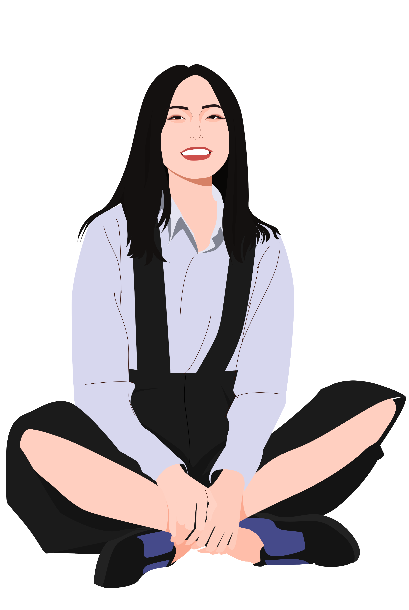
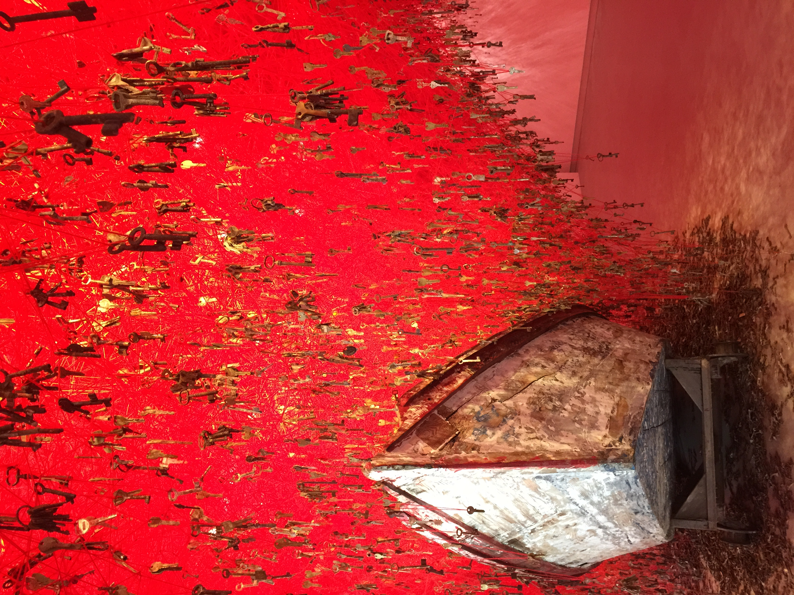
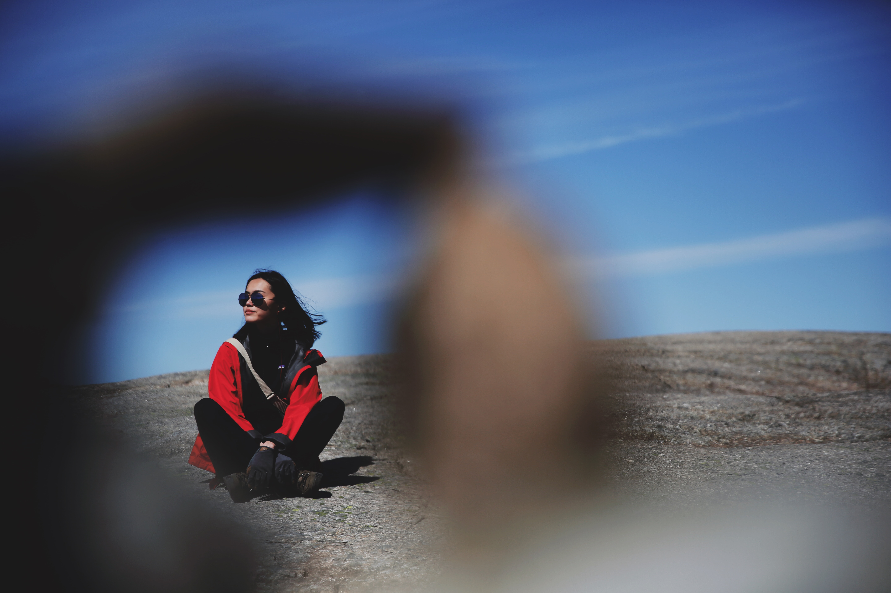

Hi, this is Jing.
Chinese born and raised
USF Media Studies student
A designer, traveler.



Our first 5 mins short documentary film made by Eunice Hoo and Me for Video Production class. Our documentary is a profile of Taiwanese artist, Justin Chen. Currently working as a designer at Google, Chen gave up his singing career in Taiwan for a life in the States. Upon graduating from UCLA in 2006, Chen has went around the States looking for a job in order to secure a lifestyle here. He had since created an art exhibit called Censored, a portrait of Ai Weiwei from 400 tweets about the Chinese artist. He chose to give up a chance at rising stardom in Taiwan and instead pursued a life here in the States. Our film aims to include universal theme of making tough decisions and the dilemma foreign students have to go through after graduating- whether to stay and work in the city where you graduate or going back home where there are more opportunities. Hopefully serving as a guide to the international students here about making a choice after graduation and finding what works for you.